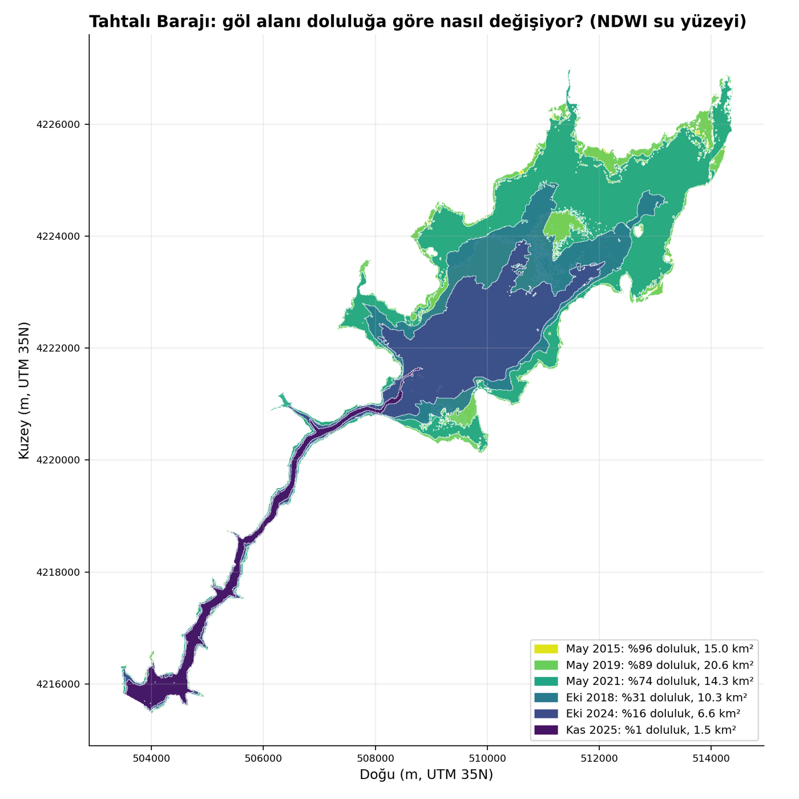

Tahtalı Barajı · İzmir · 2010–2026 su yılları
Doluluk, yağış, çekilen su ve buharlaşma
Tahtalı Barajı'nın doluluk oranı (occupancy rate), havzaya düşen aylık yağış (precipitation) ve İZSU'nun barajdan çektiği su (withdrawal) aynı grafikte. Su yılı (water year) 1 Ekim'de başlar, 30 Eylül'de biter. Aşağıdan yıl aralığını ve gösterilecek serileri seçebilirsiniz.
Yakınlaştırmak için grafikte sürükleyin, sıfırlamak için çift tıklayın. Değerleri görmek için fareyle (ya da dokunarak) üzerine gelin.
Su bütçesi ve göl yüzeyi buharlaşması
Barajın aldığı net su (net inflow) = hacim değişimi + çekilen su + göl yüzeyinden buharlaşan su (lake evaporation). Açık kaynaklarla (Open-Meteo/ERA5-Land meteorolojisi, uydudan göl alanı) hesaplanan buharlaşma kaybı aşağıda; grafikler yukarıda seçtiğiniz su yılı aralığına göre güncellenir.
Çubuklar: net girdi (koyu) + göl buharlaşması (turuncu). Siyah çizgi: havzaya düşen yağış hacmi (hm³ = milyon m³).
Çubuklar: aylık buharlaşma hacmi (hm³). Çizgi: göl yüzey alanı (km²). Göl küçülünce aynı derinlikteki buharlaşma çok daha az suya karşılık gelir.

Nasıl okunur?
- Doluluk oranı (%) İZSU'nun yayımladığı aktif doluluk değeridir; günlük veridir. Tek günlük hatalı sıçramalar temizlendi, kaynaktaki bazı uzun boşluklar (örneğin 2012–2013 kışı, Mart–Nisan 2019) çizgide kopukluk olarak görünür.
- Aylık yağış (mm) CHIRPS v2 uydu verisinden havza ortalaması olarak hesaplandı. Uydu tabanlı bir tahmindir; gerçek yağıştan sapabilir.
- Çekilen su (bin m³/gün) İZSU'nun Tahtalı Barajı için yayımladığı aylık su üretimi toplamının gün sayısına bölünmüş hâlidir. Barajdan alınan ham su için bir vekil (proxy) değişkendir; buharlaşmayı ve bırakılan suyu içermez.
- Göl buharlaşması açık su yüzeyi için Penman denklemiyle günlük hesaplandı (rüzgâr, sıcaklık, çiy noktası ve güneş radyasyonu: Open-Meteo arşivi, ERA5-Land tabanlı); derinlik (mm) × göl alanı (km²) hacme çevrildi. Ortalama yaklaşık 1.870 mm/yıl, yaklaşık 28 hm³/yıl. Isı depolaması yok sayıldı, göl alanı uydu verisinden tahmin edildi; değerler yaklaşık olarak okunmalıdır. Taşma ve çevresel su bırakma verisi yoktur.
- Her su yılının en yüksek (siyah) ve en düşük (kırmızı) doluluğu etiketlenmiştir. Birbirine 120 günden yakın aynı türden etiketler atlanır.
Kaynaklar: İZSU baraj doluluk ve su üretimi verileri (izsu.gov.tr); CHIRPS v2 günlük yağış (Climate Hazards Center, UC Santa Barbara); Open-Meteo Historical Weather API (open-meteo.com); Penman açık su yöntemi: FAO-56 (Allen ve diğerleri, 1998); havza sınırı ve analiz: Ç. Tükel. Bu sayfa kişisel bir çalışmadır, kurumun resmî görüşünü yansıtmaz.